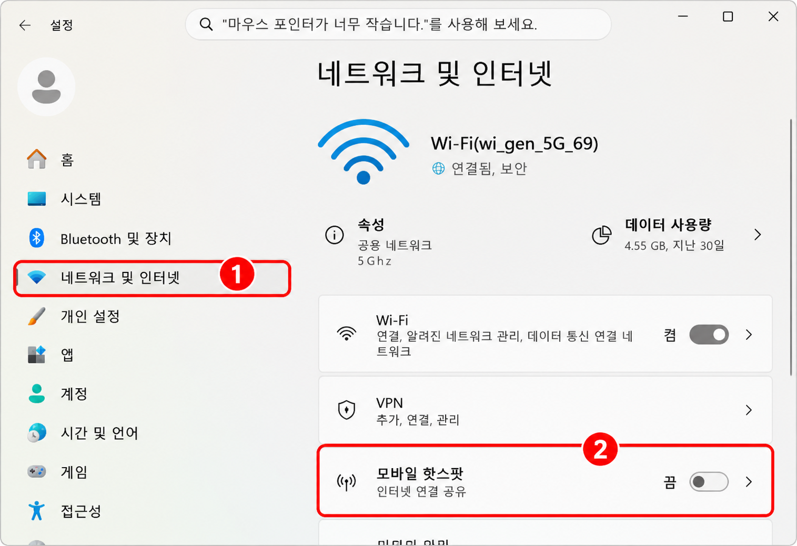
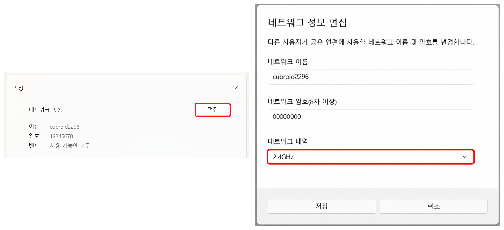
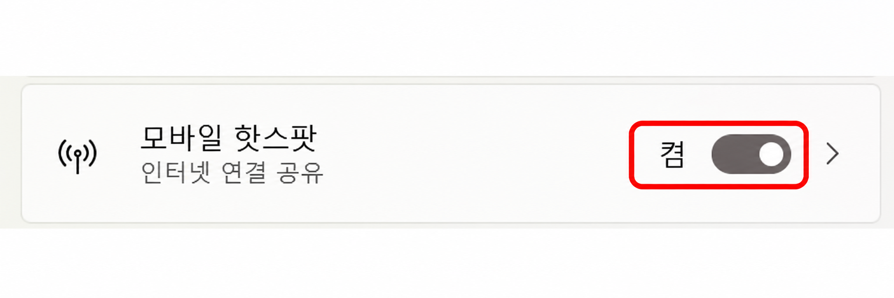
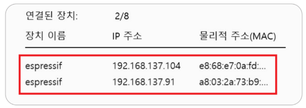
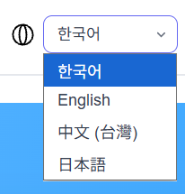
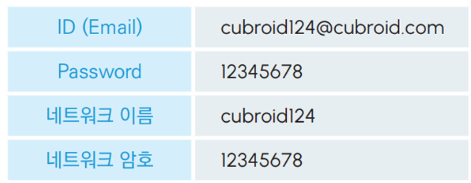
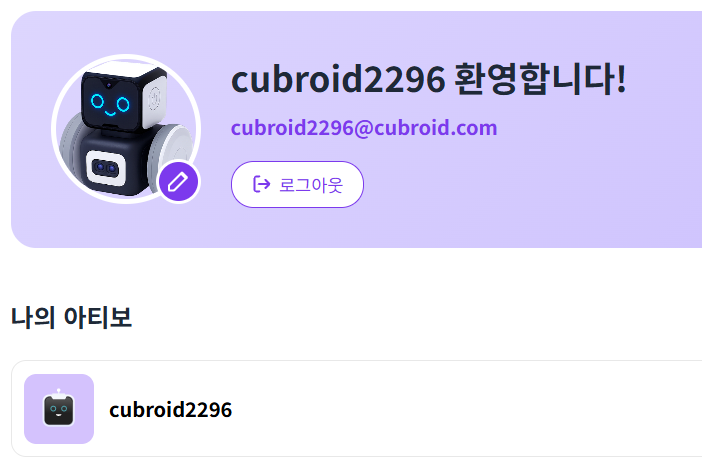

기기 충전 및 환경 (필독)
| 권장 기기 | Windows 노트북 |
|---|---|
| 네트워크 | 2.4GHz Wi-Fi 또는 2.4GHz 모바일 핫스팟 |
| 플랫폼 | Chrome에서 아티보 AI 코딩 플랫폼 사용 (artibo.cubroid.com / coding.cubroid.com) |
충전·전원
헤드와 바디의 전원을 모두 끕니다.
전원을 켜두어 방전이 된 후, 전원이 켜있는 상태에서 그대로 충전선을 꽂고 충전하게 되면 아티보의 펌웨어가 삭제되거나 손상될 수 있습니다.
각 블록의 충전 단자에 충전선을 연결합니다.
상태 LED가 빨간색이면 충전 중, 파란색이면 충전 완료입니다.
* 완충까지 2시간 소요 / 2시간 사용 가능
* 전원을 끔 → 충전기 연결 → 전원 켜서 사용
아티보 연결하기
사전 확인 (교육기관용 셋팅 기기)
아티보는 교육기관 편의를 위해 사전에 계정 생성 및 세팅이 완료되어 출고됩니다. (별도 매니저 앱 세팅 불필요)
- 각 아티보 패키지에 부착된 라벨지 상의 계정(ID/PW)과 네트워크 정보를 꼭 확인해주세요.
- 반드시 Windows 기반 노트북 또는 PC를 사용해야 합니다. (크롬북, 태블릿 비권장)
- PC의 경우 2.4GHz를 지원하는 와이파이 동글이 필수입니다.
PC 네트워크(모바일 핫스팟) 설정
-
Windows 시작 메뉴 → 설정 → 네트워크 및 인터넷 → 모바일 핫스팟 선택

-
"네트워크 속성 편집"을 열어 네트워크 이름과 암호를 라벨지와 동일하게 수정합니다.

- 중요: 네트워크 대역을 반드시 2.4GHz로 선택하고 저장합니다. (5GHz 연결 불가)
- '모바일 핫스팟'을 켭니다.

-
아티보 헤드와 바디의 전원을 켭니다. 약 10~15초 후 연결이 완료되면 아티보 헤드에 '웃는 표정'이 나오고 바디 바퀴가 살짝 움직입니다.

오타가 없는지, 네트워크 대역이 2.4GHz로 설정되었는지 다시 확인해주세요.
AI 코딩 플랫폼 로그인
- Chrome 브라우저에서 coding.cubroid.com 에 접속합니다.
- 주의: 우측 상단의 Google 자동 번역이 뜨면 'X'를 눌러 번역을 끄세요. (오류 원인)
- 플랫폼 자체의 우측 상단 언어 선택 메뉴에서 "한국어"로 변경합니다.

- 아티보 상자 라벨지에 적힌 ID/PW로 로그인합니다.

- '나의 페이지'의 '나의 아티보 목록'에 연결된 아티보가 보이는지 확인합니다.

시작 전에 꼭 읽을 것
1. 인자 순서가 반대인 함수 한 쌍
| 함수 | 순서 |
|---|---|
| artibo_speak(text, voice_id) | 글자 → 목소리 |
| jarvis_speak(voice, text) | 목소리 → 글자 |
아티보용 코드를 자비스로 옮길 때 가장 자주 틀리는 곳입니다.
2. 센서 함수의 반환값은 "응답 없음"일 수 있습니다
| 함수 | 실패 시 값 | 주의 |
|---|---|---|
| is_obstacle_detected() | False | False = 장애물 없음 또는 로봇 응답 없음 |
| get_left_floor_sensor_value() | 0 | 0 = 흰 바닥 또는 로봇 응답 없음 |
| get_right_floor_sensor_value() | 0 | 위와 같음 |
| 카메라·마이크 함수 | "" (빈 문자열) | 20초 안에 사진이 안 오면 빈 값 |
로봇이 응답하지 않으면 프로그램이 멈추지 않도록 "정상처럼 보이는 값"이 돌아옵니다. 화면 오른쪽 센서 패널과 말풍선에 "응답 없음" 표시가 함께 뜨니, 값이 이상하면 그것부터 확인하세요.
3. 파이썬이 두 가지 방식으로 실행됩니다 (v3.0 핵심)
실행 버튼은 하나지만, 코드를 보고 자동으로 실행 엔진을 선택합니다.
| 구분 | 기존 방식 | 진짜 파이썬 (Python 3, 베타) |
|---|---|---|
| 언제 실행? | 진짜 파이썬 문법이 없는 코드 (기존 교안 코드) | 딕셔너리 반복·f-string·import·class·try·슬라이싱·컴프리헨션·lambda·키보드 함수가 있는 코드, 또는 맨 위에 # [Python 3] |
| 문법 | 제한 있음 (부록 B-2) | 학교에서 배우는 파이썬 그대로 (부록 B-1) |
| 확인 방법 | 바로 코드 출력 실행 | 출력창에 "진짜 파이썬(Python 3)으로 실행해요"가 먼저 나옴 |
💡 새로 만드는 교안은 코드 맨 위에 # [Python 3]를 넣는 것을 권합니다. 그러면 문법 제한 없이 항상 같은 방식으로 실행됩니다.
4. 스크래치 코드를 파이썬으로 가져올 수 있습니다
스크래치 화면 설정 → 파이썬 코드로 보기를 누르면 블록이 파이썬 코드로 바뀌어 파이썬 에디터에 열립니다.
• 깃발 코드는 본문, "신호를 받았을 때"는 def on_신호() 함수, 내 블록은 def로 옮겨집니다.
• 파이썬에 없는 블록은 # [변환 안 됨] 주석으로 남습니다. 스크래치는 여러 묶음이 동시에 돌지만 파이썬은 위에서 아래로 실행되므로 순서가 달라질 수 있습니다.
1. Artibo_head — 말하기·표정·번역
artibo_speak(text, voice_id)
v3.0 동작 변경아티보 스피커로 글자를 읽습니다. 40자를 넘으면 첫 문장만 읽습니다(안전 정책). 반환값 없음.
• 진짜 파이썬 (Python 3): 말이 끝날 때까지(글자 수에 따라 약 6~16초) 기다린 뒤 다음 줄로 갑니다. 말하는 도중에 표정·동작이 겹치지 않습니다. (대신 말하면서 동시에 움직일 수는 없습니다.)
• 기존 방식: 보내자마자 다음 줄로 갑니다. 이어서 또 말하면 앞 말이 끝날 때까지 기다렸다가 말합니다.
artibo_speak("안녕하세요", "Korean_Seoyeon")voice_id 허용값 (대소문자 무관, 18종):
Korean_Seoyeon (한국어), English_US_Matthew / English_US_Joanna (미국 영어), English_British_Brian / English_British_Emma (영국 영어), Japanese_Mizuki / Japanese_Takumi (일본어), Chinese_Zhiyu (중국어), French_Mathieu / French_Lea (프랑스어), German_Hans / German_Marlene (독일어), Italian_Giorgio / Italian_Bianca (이탈리아어), Spanish_Miguel / Spanish_Mia (스페인어), Portuguese_Cristiano / Portuguese_Ines (포르투갈어), Russian_Maxim / Russian_Tatyana (러시아어), Arabic_Zeina (아랍어), Hindi_Aditi (힌디어)
artibo_speak_google(voice_name, text)
Google 목소리로 말합니다. (주의: artibo_speak와 인자 순서가 반대입니다.)
artibo_speak_google("ko-KR-Neural2-C", "안녕하세요")voice_name 허용값: ko-KR-Neural2-C(한국어 남), ko-KR-Neural2-A(한국어 여), en-US-Neural2-D(영어 남), ja-JP-Neural2-B(일본어 여)
artibo_set_mood(mood)
아티보 표정을 바꿉니다.
artibo_set_mood("Love")허용값 (23개): Angry, Annoyed, Cute, Dizzy, Furious, Glasses, Happy, Kiss, Love, Neutral, Perplexed, Playful, Sad, Sleep, Smile, Surprised, Suspicious, Worried, Smile_eye, Close_eye, Angry_eye, Sorry1_eye, Sorry2_eye
artibo_display_text(text, font_size)
아티보 화면에 글자를 표시합니다. (font_size: 양의 정수, 클수록 큰 글자)
artibo_display_text("Hello", 27)artibo_translate(language, text)
글자를 번역해 문자열로 돌려줍니다.
result = artibo_translate("ko", "Hello")
artibo_speak(result, "Korean_Seoyeon")지원 언어 코드 (15개): ko(한국어), en(영어), ja(일본어), zh(중국어 간체), zh-TW(중국어 번체), fr(프랑스어), de(독일어), es(스페인어), it(이탈리아어), pt(포르투갈어), ru(러시아어), ar(아랍어), hi(힌디어), id(인도네시아어), th(태국어)
2. Artibo_body — 이동·센서
artibo_move(direction, seconds)
인자 변경 (power 제거)바디를 움직입니다. 한 번 호출에 최소 1초 걸립니다(seconds가 1보다 작아도 1초 대기).
※ 모터 강도는 항상 100입니다(DC 모터 좌우 편차로 직진이 흐트러지는 것을 막기 위해 강도 인자 제거).
※ 옛 코드의 3인자 형태 artibo_move("Go", 100, 1)도 그대로 동작하며 가운데 값은 무시됩니다.
artibo_move("Go", 1)- direction: "Go"(전진), "Back"(후진), "Left"(좌회전), "Right"(우회전), "Stop"(정지)
- seconds: 동작 시간(초). 0.5 같은 소수 가능
is_obstacle_detected()
앞쪽 장애물 여부. (장애물 있음: True / 없음 또는 응답 없음: False)
if is_obstacle_detected():
artibo_move("Stop", 1)get_left_floor_sensor_value()
get_right_floor_sensor_value()
v3.0 좌우 기준 교정
바닥 센서 정수값. 검은 선 위에서 값이 커집니다. (0은 흰 바닥 또는 응답 없음)
- 왼쪽·오른쪽 기준: 로봇이 바라보는 방향 기준입니다 (2026-11-05 수정 — 이전에는 로봇을 마주 본 사람 기준이라 반대였음).
- 공중 감지: 로봇을 들어 올리면 값이 아주 커집니다. 실측 기준 약
3000보다 크면 "들었다"로 볼 수 있습니다(교실 바닥 색에 따라 다르니 출력해서 확인). - 센서 값을 읽는 데 시간이 걸려서, 움직이면서 선을 따라가기보다 멈춘 채로 쓰는 것이 잘 맞습니다.
left = get_left_floor_sensor_value()
right = get_right_floor_sensor_value()
if left > 3000 and right > 3000:
artibo_speak("와, 하늘을 나는 것 같아!", "Korean_Seoyeon")3. Image_recognition — 사물·글자 인식
artibo_image_recognition(timer)
사진을 찍어 사물 이름을 문자열로 돌려줍니다. (timer = 촬영 전 대기 초)
result = artibo_image_recognition(3)artibo_text_recognition(timer)
사진 속 글자를 문자열로 돌려줍니다. 못 찾으면 빈 문자열("") 반환.
text = artibo_text_recognition(2)4. Speech_recognition — 음성 인식·통역
artibo_speech_to_text(language_code, recording_time, timer)
아티보 마이크로 녹음해 글자로 바꿉니다. (language_code: 2글자 코드, recording_time: 녹음 초, timer: 녹음 전 대기 초)
result = artibo_speech_to_text("ko", 3, 3)artibo_speech_to_translate(source_language, target_language, recording_time, timer)
녹음한 말을 다른 언어로 번역해 돌려줍니다. source는 지역 코드(ko-KR), target은 2글자(en) 형식입니다.
result = artibo_speech_to_translate("ko-KR", "en", 3, 3)source_language 허용값 (16): ko-KR, en-US, ja-JP, zh, zh-TW, fr-FR, de-DE, es-MX, it-IT, pt-BR, ru-RU, ar-AE, hi-IN, id-ID, th-TH, vi-VN
artibo_speech_to_text_by_whisper(recording_time, timer)
Whisper로 음성 인식. 언어 자동 감지.
result = artibo_speech_to_text_by_whisper(3, 3)5. Facial_recognition — 얼굴
artibo_recognize_celebrities(timer)
닮은 유명인 이름을 문자열로 돌려줍니다.
artibo_detect_face(option, timer)
나이·성별·감정 중 하나를 문자열로, 얼굴 없으면 빈 문자열 반환. (option은 대소문자 무관)
age = artibo_detect_face("Age", 3)
gender = artibo_detect_face("Gender", 3)
mood = artibo_detect_face("Mood", 3)artibo_face_comparison(timer)
촬영한 얼굴을 나의 페이지에 등록한 얼굴과 비교합니다. (사전 등록 필수)
6. AI — 대화·시각·이미지 생성
artibo_gpt_chat(prompt)
ChatGPT 답변을 문자열로 반환합니다.
answer = artibo_gpt_chat("고구려 수렵도를 30자 이내로 설명해줘.")
artibo_speak(answer, "Korean_Seoyeon")artibo_gpt_vision(language_code, timer)
아티보 카메라 화면을 AI가 설명합니다. (language_code: en, ko, ja, zh / timer가 0이면 즉시)
description = artibo_gpt_vision("ko", 0)artibo_image_generation(prompt, api_key)
글로 설명한 이미지를 생성해 화면에 표시합니다.
artibo_image_generation("귀여운 고양이 우주비행사", "sk-...")※ 주의: 사용자가 발급받은 OpenAI API 키가 필요하며, 없으면 경고창만 뜹니다. (일반 수업용 아님)
7. Jarvis — PC 스피커·카메라·화면
로봇 없이 PC에서 동작합니다. 아티보용 함수와 이름이 비슷하니 인자 순서에 주의하세요.
| 함수 | 설명 |
|---|---|
| jarvis_speak(voice, text) | PC 스피커로 말하기. 목소리가 먼저 옵니다! voice: alloy, echo, fable, onyx, nova, shimmer |
| jarvis_gpt_vision(language_code, timer) | PC 카메라 화면 설명 (en, ko, ja, zh) |
| jarvis_speech_to_text(recording_time, timer) | PC 마이크 음성 인식 |
| jarvis_set_mood(mood) | 자비스 화면 표정 변경 (8종) defaultAppearance, smilingAppearance, cryingAppearance, surprisedAppearance, angryAppearance, cyberHeroAI, hackerAI, intelligentStrategyAI |
| jarvis_display_text(text, font_size) | 자비스 화면 글자 출력 |
| jarvis_sing(song_name) | 내장 음악 재생 (8종) AI_Explorer, Build_Code_Create, Code_the_Future, Ctrl_Alt_Innovate, Dream_Code_Repeat, Hello_AI_World, Next_Level_Coding, Robots_Me |
| jarvis_sing_url(url) | 인터넷 MP3 재생 |
| jarvis_stop_singing() | 음악 정지 |
jarvis_speak("nova", "안녕하세요")
jarvis_set_mood("smilingAppearance")
jarvis_sing("Hello_AI_World")※ 일부 PC 환경에서 자비스 음성의 첫 음절이 짧게 잘린다는 제보가 있습니다(블루투스 스피커 등 환경 의존).
8. Extension — 기본 도구
sleep(seconds)
지정 초만큼 대기. 0.5 같은 소수 가능
randint(minimum, maximum)
양 끝을 포함한 무작위 정수
print(값, ...)
화면 오른쪽 실행 로그에 출력
n = randint(1, 6)
print("주사위:", n)
sleep(1)9. Artibo LCD — 표정·그림·글자
artibo_lcd_face(face_id)
LCD에 표정을 한 번 표시합니다. 허용값 (11종): smile, grin, blank, happy, unamused, surprised, suspicious, neutral, friendly, cute, beaming
※ 구버전 이름도 동작하지만 다른 표정으로 변환됩니다 (normal→smile, wink→smile, sad→unamused, angry→unamused, love→happy, dead→neutral). 새 교안에는 위 11개만 쓰세요.
artibo_lcd_face_blink(face_id)
artibo_lcd_blink_stop()
눈을 3초마다 깜빡이는 표정을 계속 표시합니다. 다른 LCD 출력을 하면 자동으로 멈추고, 명시적으로 멈추려면 artibo_lcd_blink_stop()을 호출합니다.
artibo_scroll_text(text, speed)
artibo_scroll_stop()
글자를 흐르게 표시 (speed: 2~12, 기본 6, 범위 밖이면 6) / 스크롤 정지
artibo_lcd_image(icon_id)
내장 아이콘 표시 (8종): heart, star, arrow_up, arrow_down, arrow_left, arrow_right, check, x_mark
artibo_take_photo_to_lcd()
사진을 찍어 흑백으로 LCD에 표시합니다.
artibo_lcd_drawing_popup(slot)
artibo_lcd_drawing_send(slot)
그림판 창을 열어 마우스로 그리고(슬롯 1~5, 생략 시 1), 저장한 슬롯을 로봇으로 보냅니다.
artibo_lcd_drawing_popup(1)
artibo_lcd_drawing_send(1)직접 그리기 (가로 128 × 세로 64, 왼쪽 위가 0, 0)
그리기 함수는 화면 밖 캔버스에 그리고, 반드시 artibo_lcd_send()를 불러야 로봇에 전송됩니다 (약 1초 소요).
artibo_lcd_pixel(x, y)- 점artibo_lcd_line(x1, y1, x2, y2)- 선artibo_lcd_circle(cx, cy, r)- 원 (중심, 반지름)artibo_lcd_rect(x, y, w, h)- 사각형 (왼쪽 위, 너비, 높이)artibo_lcd_text(text, x, y, size)- 글자 (size 기본 12)artibo_lcd_clear()- LCD 지우기
artibo_lcd_clear()
artibo_lcd_circle(64, 32, 20)
artibo_lcd_text("Hi", 54, 26, 12)
artibo_lcd_send()10. 소리 — 효과음·캐릭터 멘트
artibo_play_effect(effect_name)
아티보 스피커로 효과음 재생 (18종)
beep, ding, whoosh, boot, shutdown, hello_beep, connected, disconnected, charging, success, fail, correct, wrong, warning, level_up, fanfare, giggle, curious
artibo_play_character(name)
캐릭터 멘트 재생 (32종)
• 한국어: robot_ment_01 ~ robot_ment_13
• 영어: robot_ment_en_01 ~ robot_ment_en_10
• 일본어: robot_ment_jp_01 ~ robot_ment_jp_09
artibo_play_robot_sfx(name)
로봇 소리 재생 (15종): robot_misc_01 ~ robot_misc_05, robot_vox_01 ~ robot_vox_10
11. 정보 — 날씨·시계
artibo_weather(city, info)
실시간 날씨 항목을 문자열로 반환
temp = artibo_weather("서울", "기온")
city (18곳): 서울, 부산, 대구, 인천, 광주, 대전, 울산, 세종, 수원, 춘천, 강릉, 청주, 전주, 목포, 여수, 포항, 창원, 제주
info (5종): 기온 / temperature, 하늘상태 / weather, 강수 / precipitation, 습도 / humidity, 풍속 / windSpeed
artibo_clock(info)
현재 날짜·시간 항목을 문자열로 반환
now = artibo_clock("시각")info 허용값: 시각 / time (14:05), 시분초 / hour minute second (14, 5, 30), 년월일 / year month date (2026, 9, 7), 요일 / weekday (월요일), 날짜 / fulldate (2026-09-07)
12. 키보드 — 화살표·스페이스 입력 진짜 파이썬 전용
| 함수 | 하는 일 | 돌려주는 값 |
|---|---|---|
| wait_key() | 키를 누를 때까지 기다림 (정지 버튼으로 풀림) | 누른 키 이름 |
| get_key() | 기다리지 않고 마지막에 누른 키를 꺼냄 (읽으면 비워짐) | 키 이름, 없으면 "" |
| is_key_pressed(name) | 지금 그 키를 누르고 있는지 확인 | True / False |
"up", "down", "left", "right", "space", "enter", "esc", "backspace", "tab", 글자·숫자는 소문자 그대로 ("a", "1")
예제: 방향키로 아티보 조종하기
MOVES = {"up": "Go", "down": "Back", "left": "Left", "right": "Right"}
while True:
key = wait_key()
if key == "space":
break
if key in MOVES:
artibo_move(MOVES[key], 0.3)
artibo_move("Stop", 0.2)부록 A·B·C. 구버전 함수 / 문법 비교 / 실행 특성
부록 A. 이 문서에서 의도적으로 뺀 함수 (구버전)
다음 함수는 엔진에 남아 있지만 구버전이라 새 교안에 쓰지 않습니다: artibo_gpt_3_5_chat, chat_gpt_3_5_manual, chat_gpt_4, artibo_gpt_4_chat, text_to_image, ai_assistants → 대화는 artibo_gpt_chat을 쓰세요.
부록 B-1. 진짜 파이썬 (Python 3, 베타)
브라우저 안에서 진짜 CPython 3.14가 돕니다. 학교에서 배우는 파이썬 문법은 모두 됩니다: 딕셔너리(.items(), .keys(), .get()), f-string, 슬라이싱, 컴프리헨션, class·상속, try / except, lambda, 기본 모듈(random, math, collections 등), numpy, pandas(처음 import 할 때 몇 초 더 걸림). 그 밖의 외부 라이브러리(pip install, keyboard 등)는 안 됩니다.
⚠️ 로봇 함수 규칙 (실행 전 한국어 안내 후 차단)
| ❌ 쓰지 말 것 | ⭕ 대신 쓸 것 |
|---|---|
로봇 명령이 든 함수를 map, filter, sorted(key=)에 넘기기, f = artibo_speak처럼 다른 이름에 담기 | 이름 그대로 직접 부르기 artibo_speak(...) |
lambda, 괄호 (... for ...), 클래스 본문, __init__, yield 함수, 기본값 자리 안의 로봇 명령 | 보통 def 함수나 for 문 안에서 부르기 |
로봇 함수에 키워드 인자 artibo_speak(text="안녕") | 순서대로 artibo_speak("안녕", "Korean_Seoyeon") |
exec(), compile() | 코드를 직접 쓰기 |
※ 로봇 명령이 없는 보통 함수는 어디에 넘겨도 됩니다. 로봇 함수 앞에 await를 쓰지 않아도 앞 명령이 끝날 때까지 자동으로 기다립니다.
알아 둘 한계:
• 로봇 명령이 없는 함수 안의 무한 반복은 정지 버튼이 듣지 않습니다(10초 초과 시 자동 중단). 오래 도는 반복은 맨 바깥에 두거나 반복 안에 sleep(0.1)을 넣으세요.
• 함수가 돌려준 딕셔너리를 반복하는 코드(for k in get_dict():)는 진짜 파이썬 문법인지 자동 감지하지 못합니다. 맨 위에 # [Python 3]를 넣으세요.
부록 B-2. 기존 방식 (브라우저 해석기) 주의사항
진짜 파이썬 문법이 없는 코드는 기존 방식으로 실행됩니다. 삼항식·다중 할당·키워드 인자·음수 인덱스·문자열 반복·기본값 인자 등은 자동 전환되지 않으므로, 이런 문법을 쓰는 교안은 맨 위에 # [Python 3]를 넣으세요.
✔️ 기존 방식에서 되는 것:
if/elif/else, for in range(), for in 리스트, while, def, return, break, continue / 산술·비교 연산, and, or, in, +=, -=, *=, /= / len, str, int, float, abs, round, sum, max, min, sorted, range, print / .upper(), .lower(), .strip(), .join(), .format(), .replace()(첫 번째만), .append(), .insert(), .remove(), .sort()(문자열 기준), not(조건)(괄호 필수)
| ❌ 쓰지 말 것 (오류 발생) | ⭕ 대신 쓸 것 |
|---|---|
| f"안녕 {name}" | "안녕 " + str(name) 또는 .format() |
| [0:2] (슬라이싱) | 인덱스 하나씩 접근 또는 반복문 |
| [x*2 for x in a] | 일반 for 문 |
| "a" if c else "b" | if / else 문 |
| lambda / 다중 할당(a, b = 1, 2) / 키워드 인자 f(b=1) | def / 한 줄씩 할당 / 위치 인자 |
| not x / not in | not(x) / (x in y) == False |
| 식 전체 괄호: if (a > b): / f((a*2)) | 괄호 없이 if a > b:, f(a*2) |
| 문자열 안 \" 이스케이프 | 작은따옴표로 감싸기 '안녕 "친구"' |
| 🚨 안 되는 것 - 오류 없이 틀린 값 (더 위험!) | 실제 결과 |
|---|---|
| "ab" * 3 / s[-1] (음수 인덱스) | null 출력 |
| [1] + [2] | 문자열 "12"가 됨 |
| def f(a, b=10) | b가 채워지지 않음 |
| try / except | 예외가 잡히지 않음 (1/0 이 Infinity) |
| dict.get() / .keys() / .values() | 동작 안 함 (d["key"] 직접 접근만 가능) |
| .sort() 숫자 리스트 | 문자열 정렬되어 10이 2보다 앞에 옴 |
부록 C. 실행 및 정지 버튼에 대해
- 로봇 명령은 순서대로 실행됩니다(
def안에서도 동일).artibo_move는 최소 1초, 소리 함수는 약 2초, LCD 전송은 약 1초, 진짜 파이썬의artibo_speak는 말이 끝날 때까지(약 6~16초) 기다립니다. - 정지 버튼을 누르면 진행 중이던 명령 뒤의 것은 실행되지 않습니다. 단, 바퀴 동작 하나는 정지를 눌러도 그 동작을 끝낸 뒤 멈춥니다(로봇이 움직이는 동안은 명령을 받지 않음). 이동 시간은 짧게(0.3~0.5초) 여러 번 나누는 것이 좋습니다.